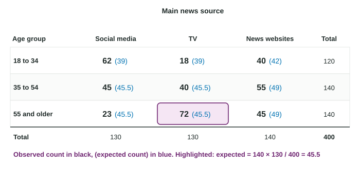

Setting Up a Chi-Square Test for Homogeneity or Independence
A chi-square test compares a two-way table of observed counts with the counts expected if H_0 were true.
Part 1 · Hook
Why this matters
Part 2 · Before you start
What this builds on
Part 3 · Prerequisite check
Quick check before you start
1. In a two-way table, 130 of 400 adults use social media for news. What proportion is that?
Show the answer
, a marginal relative frequency.
- Correct: :
- :
- :
- :
2. Two categorical variables are associated when
- the conditional distributions differ across groups
- the counts are all large
- the row totals are equal
- one variable has more categories
Show the answer
Association means the distribution of one variable changes with the other.
- Correct: the conditional distributions differ across groups:
- the counts are all large:
- the row totals are equal:
- one variable has more categories:
3. Which is a correct null hypothesis?
- A statement of no effect or no difference about the population
- A statement about the sample results
- The claim the researcher hopes to prove
- A statement that the p-value is small
Show the answer
The null hypothesis is the "nothing going on" claim about parameters.
- Correct: A statement of no effect or no difference about the population:
- A statement about the sample results:
- The claim the researcher hopes to prove:
- A statement that the p-value is small:
Part 4 · See it
See it first

Part 5 · Step by step
How it works, step by step
- Ask whether two categorical variables are related, or whether groups share one distributionuse a chi-square test: independence for one sample and two variables, homogeneity for several samples or groups and one variable
- says no association (or the same distribution in every group)under , every row has the same column proportions as the whole table
- Apply the overall column proportion to each rowexpected count
- Compare each observed count with its expected count is large when the table is far from what predicts, after checking random, 10% and expected counts at least 5
Part 6 · Key ideas
Key ideas
- Independence: one random sample, two categorical variables. : no association between them in the population.
- Homogeneity: separate random samples or randomly assigned groups, one categorical variable. : the distribution is the same in every population.
- Expected count ; do not round expected counts.
- Conditions: random; 10% for each sample; every expected count at least 5.
Part 7 · Misconception
A common mistake
The wrong idea: The large counts condition for a chi-square test is that every observed count is at least 10.
What actually happens: The condition is about expected counts, the counts predicts, and the threshold is 5: every expected count must be at least 5.
Part 8 · Check yourself
Check yourself
Exam-style questions. Anything you miss goes into your review queue.
Table
Age and main news source
| Age group | Social media | TV | News websites | Total |
|---|---|---|---|---|
| 18 to 34 | 62 | 18 | 40 | 120 |
| 35 to 54 | 45 | 40 | 55 | 140 |
| 55 and older | 23 | 72 | 45 | 140 |
| Total | 130 | 130 | 140 | 400 |
1. Which test fits the firm's question of whether age group and main news source are related?
- A two-sample z test for
- A chi-square test for independence
- A one-proportion z test for the share who use TV
- A chi-square test for homogeneity
Show the answer
One sample, two categorical variables: independence.
- A two-sample z test for : That compares two proportions. Here each variable has three categories.
- Correct: A chi-square test for independence: Right: one random sample, two categorical variables recorded on each person.
- A one-proportion z test for the share who use TV: That looks at one category of one variable and ignores age.
- A chi-square test for homogeneity: Homogeneity compares one variable across separate samples or groups. Here one sample is classified two ways.
2. Which hypotheses fit this test?
- : there is an association; : there is no association
- : older adults in the city prefer TV news; : older adults in the city do not prefer TV news
- : age group and news source are not associated among the city's adults; : they are associated
- : the proportions of adults in the three age groups are equal; : they are not
Show the answer
: the variables are independent (no association) in the population; : they are associated.
- : there is an association; : there is no association: These are reversed. The null hypothesis is "no association".
- : older adults in the city prefer TV news; : older adults in the city do not prefer TV news: The hypotheses are about the whole relationship, not one cell, and is the "no association" claim.
- Correct: : age group and news source are not associated among the city's adults; : they are associated: Right: independence hypotheses are about the relationship between the two variables in the population.
- : the proportions of adults in the three age groups are equal; : they are not: That is about one variable only. The question is whether the two variables are related.
3. If is true, what is the expected count of adults aged 55 and older whose main source is TV?
Type a number. A table answer and a calculator answer are both accepted.
Show the answer
Expected .
- Answer: 45.5
4. Write the expression for the expected count of adults aged 18 to 34 whose main source is news websites, then give its value.
Type the expression as on the exam, with the values substituted.
Show the answer
Expected
- Answer:
5. Which statement correctly checks the large counts condition for this chi-square test?
- The sample of 400 is at least 30
- The smallest expected count is 39, so every expected count is at least 5
- The expected counts add up to 400, the sample size
- The smallest observed count is 18, so the observed counts are at least 10
Show the answer
Large counts for chi-square: all expected counts at least 5.
- The sample of 400 is at least 30: Comparing with 30 is a rule for means.
- Correct: The smallest expected count is 39, so every expected count is at least 5: Right: a chi-square test needs every expected count to be at least 5.
- The expected counts add up to 400, the sample size: They always add to the grand total, so this checks nothing.
- The smallest observed count is 18, so the observed counts are at least 10: The condition is about expected counts, and the chi-square threshold is 5.
6. A vet randomly assigns 150 dogs to three diets and records whether each dog's coat improves, stays the same or gets worse. Which test fits?
- Homogeneity: compare the three diet groups' outcome distributions
- A one-proportion z test for the share of dogs that improve
- A chi-square test for independence, since the dogs form one group
- A two-sample z test, since there are two variables
Show the answer
Groups made by random assignment, one categorical response: homogeneity.
- Correct: Homogeneity: compare the three diet groups' outcome distributions: Right: randomly assigned groups are treated like separate samples, and one categorical outcome is compared across them.
- A one-proportion z test for the share of dogs that improve: That ignores the diets, the point of the study.
- A chi-square test for independence, since the dogs form one group: The vet created three groups by random assignment; comparing their outcome distributions is homogeneity.
- A two-sample z test, since there are two variables: A two-sample z test compares two proportions. Here there are three groups and three outcomes.
7. Which study calls for a chi-square test for independence rather than homogeneity?
- Patients randomly assigned to three treatments, with the outcome recorded as better, same or worse
- One random sample of 500 voters, each classified by party and by view on a ballot measure
- Random samples of 100 students at four schools, asked their favorite subject
- Separate random samples of 200 voters from each of three parties, asked their view on a measure
Show the answer
Independence: one sample, two variables. Homogeneity: several samples or groups, one variable.
- Patients randomly assigned to three treatments, with the outcome recorded as better, same or worse: Groups made by assignment, one outcome compared: homogeneity.
- Correct: One random sample of 500 voters, each classified by party and by view on a ballot measure: Right: one sample, two variables recorded on each voter.
- Random samples of 100 students at four schools, asked their favorite subject: Several samples, one variable: homogeneity.
- Separate random samples of 200 voters from each of three parties, asked their view on a measure: Separate samples from each party, one variable compared: homogeneity.
Part 9 · Summary
Summary
Part 10 · Up next
What comes next
Part 11 · Connections